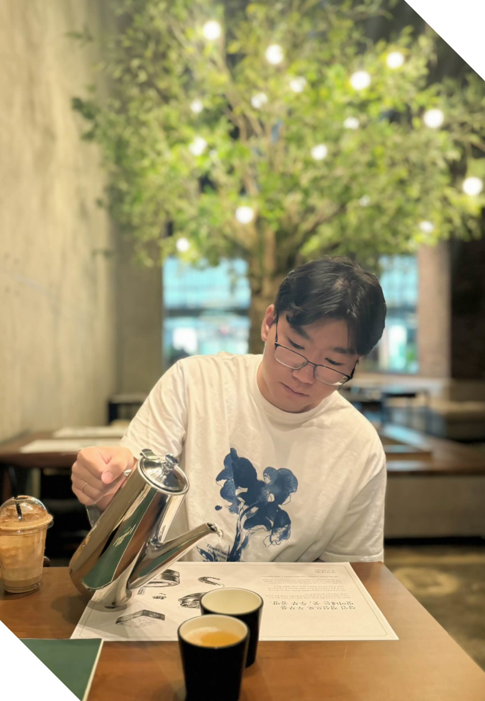
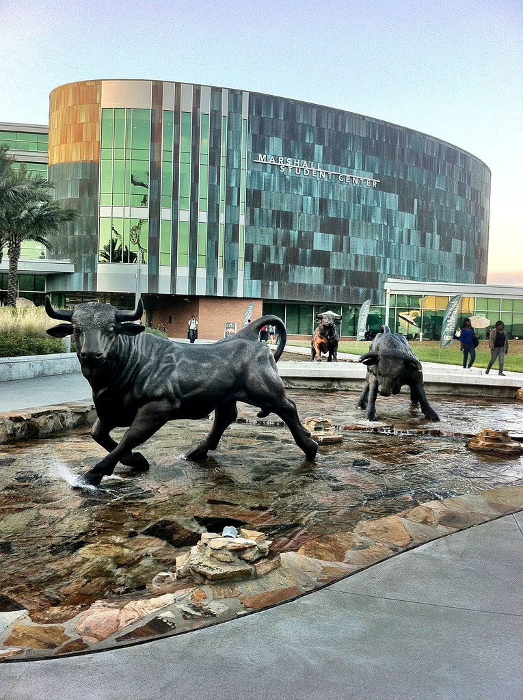

"Passion makes the impossible happen"


I'm a senior at the University of South Florida studying Computer Science.
and a former Software Engineer Intern at the U.S. Department of Air Force
My background is primarily in full-stack development and data analysis,
which I focused on during my internship at Robins Air Force Base.
I have explored machine learning through a research project analyzing
social media data and emotions.
I am actively seeking full-time roles in software engineering and development. I am eager to leverage my technical skills and leadership experience in new and challenging opportunities